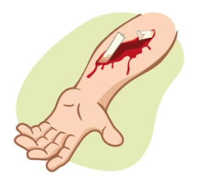
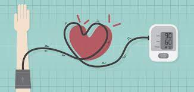

What is Severe Bleeding ?
- Severe bleeding, also known as hemorrhage, refers to the loss of a large volume of blood from the body. It can occur externally through a visible wound or internally due to trauma or medical conditions. Severe bleeding can be life-threatening and requires prompt medical attention.
- It is characterized by the inability of the body to adequately control or stop the bleeding, leading to a significant decrease in blood volume.
.png)
Causes
some common causes of severe bleeding:
- Traumatic Injuries: Accidents, falls, cuts, puncture wounds, and other forms of trauma can lead to severe bleeding. These injuries can damage blood vessels, causing significant blood loss.
- Medical Conditions: Certain medical conditions can increase the risk of severe bleeding due to abnormalities in the blood vessels, clotting factors, or platelets..
- Medication Side Effects: Certain medications, particularly anticoagulants (blood thinners) and antiplatelet drugs, can increase the risk of bleeding by interfering with the blood's ability to clot properly.
- Gastrointestinal Bleeding: Bleeding from the gastrointestinal tract, such as from peptic ulcers, gastritis, esophageal varices, or colorectal cancer, can result in severe blood loss.
- Hemorrhagic Stroke: Bleeding within the brain (intracerebral hemorrhage) or surrounding the brain (subarachnoid hemorrhage) due to ruptured blood vessels can lead to severe bleeding and neurological symptoms.
- Miscarriage or Childbirth Complications: Severe bleeding can occur during miscarriage or childbirth due to placental abruption, uterine rupture, or postpartum hemorrhage.
Common Symptoms
Symptoms of severe bleeding can vary depending on the cause and location of the bleeding. However, some common symptoms include:
- Visible Blood Loss.
- Blood-soaked Clothing or Bandages.
- Low Blood Pressure.
- Pale or Cold Skin
- Confusion or Altered Mental Status



First aid tips of Severe Bleeding
First aid tips for severe bleeding are crucial for providing immediate care to individuals experiencing significant blood loss.
Few first aid tips:
- Apply Direct Pressure
- Elevate the Injured Area.
- Apply Pressure Points
- Use Tourniquets
Remember, first aid for severe bleeding should be performed promptly and efficiently while waiting for professional medical help to arrive. Always prioritize your safety and the safety of the injured person when providing first aid.